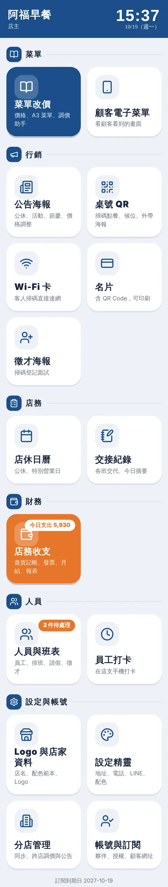
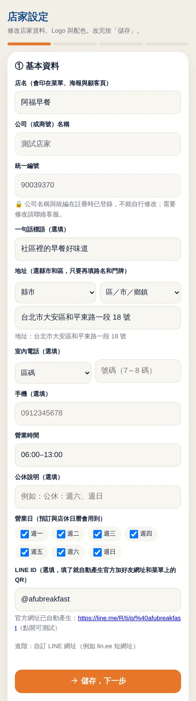
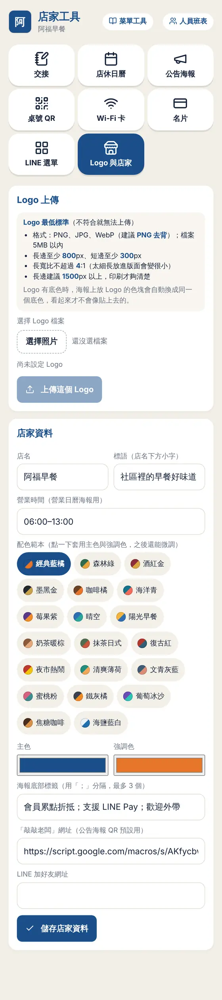
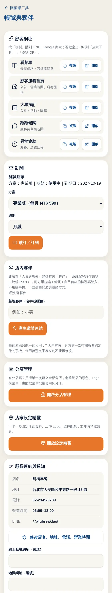
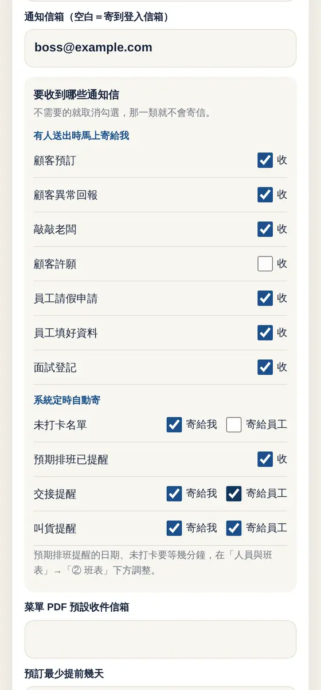

主畫面
登入後先看到大按鈕主畫面，待處理的事會有小徽章提醒。
- 依菜單、行銷、店務、財務、人員分類
- 今日支出、待審假單等徽章
- 店主與夥伴看到各自能用的功能

設定精靈
第一次使用照步驟填好店名、地址、電話、LINE 與配色，所有文宣自動套用。
- 地址、電話分欄填寫
- 配色範本或自訂
- 填完立即套用到菜單與海報

Logo 與店家資料
上傳 Logo、選配色，菜單、名片、海報全部用同一套品牌。
- 支援 PNG、JPG、WebP
- 20 組配色範本
- 品牌色自動套用

帳號、夥伴與通知
管理夥伴帳號、顧客網址與訂閱，並選擇要收到哪些 Email 通知。
- 顧客網址一鍵複製
- 夥伴與授權管理
- 通知可逐項開關

